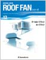
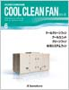
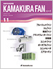
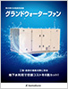
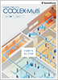

カタログデータダウンロード（無料）
CADデータ
カタログデータ
カタログデータ（PDFファイル）を閲覧するには、Adobe Readerが必要です。
ファイルサイズが大きいPDFを閲覧するときは、右クリック（Machintoshではcontrol+クリック）でファイルをダウンロードしてからご覧いただくことをお勧めいたします。

| シリーズカタログ | |||
|---|---|---|---|
| トータル換気・採光・排煙・身体冷却システム製品案内 2022年9月発行 12ページ・5.4MB |
 | ROOF FANシリーズ （クールルーフファン、ルーフファン） 2023年9月発行 60ページ・7.7MB |
|
|  | COOL CLEAN FANシリーズ （クールクリーンファン、クールユニット、クリーンファン、給気システムファン） 2023年9月発行 32ページ・6.5MB |
 | KAMAKURA FANシリーズ （ブルージェットファン、ジムファン、搬送ファン、グランドウォーターファン、涼風扇、ユニットファン、ポータブルファン、ユニットヒータ、エアカーテン） 2024年5月発行 60ページ・7.4MB |
 |
採光・排煙シリーズ （ハッチシリーズ、ドームシリーズ） 2022年9月発行 32ページ・9.7MB |
「エアカーテン」は KAMAKURA FANシリーズに 統合されました。 |
|
| 地下水利用システム | |||
| ジオ・アクア システム 2024年6月発行 6ページ・2.5MB |
|||
|  | グランドウォーターファン 2024年3月発行 4ページ・2MB |
 | COOLEX-Multi-Air 2024年2月発行 6ページ・6.4MB |
| 身体冷却システム | |||
| COOLEXシリーズ （COOLEX-Pro、COOLEX-1等） 2024年2月発行 16ページ・9.9MB |
|||
| 気化放熱式涼風装置 | |||
 |
アクアクールミニ 2020年7月発行 2ページ・970KB |
 |
クールルーフファン 高静圧・下吹出形/上吹出形 2020年5月発行 2ページ・972KB |
 |
クールラージファン 2020年5月発行 2ページ・895KB |
||
| 産業用換気装置／産業用送風装置 | |||
 |
ブルージェットファン （旧：GYMファン） 2023年8月発行 8ページ・2.5MB |
 |
エアフォローファン 2019年6月発行 2ページ・637KB |
 |
ジムファン 2020年12月発行 2ページ・1.3MB |
 |
ルーフファン 省エネ形 2023年7月発行 2ページ・1MB |
| 冷蔵庫用加湿機 | |||
 |
冷蔵庫用加湿機 2023年9月発行 4ページ・2.2MB |
||
| 製品価格表 | |||
 |
製品価格表／ファン関係 2024年4月発行 36ページ・1.5MB |
 |
製品価格表／採光・排煙シリーズ 2024年5月発行 16ページ・955KB |